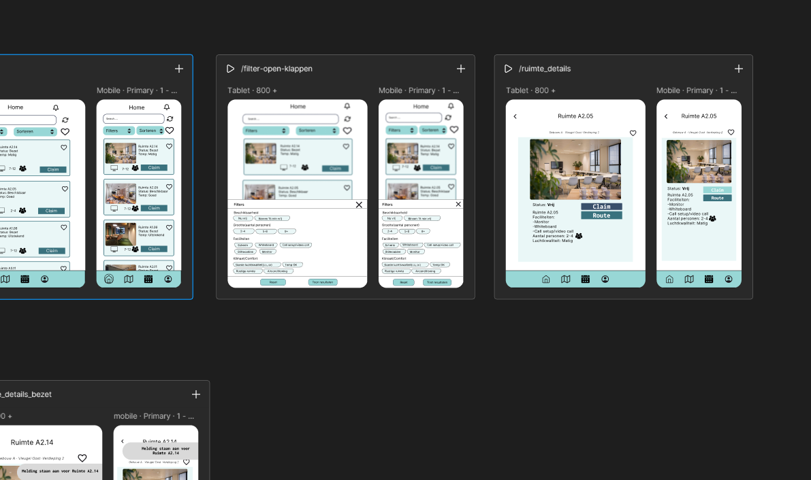

Over dit project
Voor dit project heb ik gewerkt aan het ontwerpen van een mobiele applicatie, die gebruikt kan worden voor het reserveren en beheren van vergaderruimtes. Hierbij stonden gebruiksvriendelijkheid en efficiëntie centraal. Het doel was om een applicatie te ontwikkelen waarmee medewerkers eenvoudig beschikbare vergaderruimtes kunnen vinden en reserveren.
De focus lag op een overzichtelijke interface, een duidelijk reserveringsproces en een systeem dat snel inzicht geeft in de beschikbaarheid van ruimtes. Daarnaast is gekeken naar hoe gebruikers eenvoudig een ruimte kunnen reserveren, wijzigen of annuleren, zodat vergaderruimtes optimaal worden benut en frustraties door dubbele of ongebruikte reserveringen worden voorkomen.
Mijn rol
Binnen dit project heb ik gewerkt aan zowel het ontwerp als de technische uitwerking van de applicatie. Ik heb gekeken naar de gebruikersflow, de structuur van de schermen en de visuele vormgeving van de interface.
Daarnaast heb ik nagedacht over hoe gebruikers eenvoudig een vergaderruimte kunnen zoeken, reserveren en beheren. Hierbij stond een duidelijke en intuïtieve interactie centraal, zodat medewerkers snel kunnen zien welke ruimtes beschikbaar zijn en zonder moeite een reservering kunnen maken of aanpassen.
User flow
De gebruikersflow is ontworpen om zo kort en duidelijk mogelijk te blijven. De gebruiker opent de app, bekijkt direct welke ruimtes beschikbaar zijn, selecteert een ruimte en reserveert deze tijdelijk om er direct naartoe te gaan. Daarna ontvangt de gebruiker bevestiging dat de ruimte vaststaat.
Ontwerpproces
Het ontwerp is gestart met low-fidelity wireframes om de structuur, schermindeling en navigatie van de applicatie te bepalen. In deze fase lag de focus op duidelijkheid, eenvoud en een logische gebruikersroute.
Daarna is het concept verder uitgewerkt tot een high-fidelity prototype in Figma, waarin kleurgebruik, typografie en visuele hiërarchie verder zijn verfijnd.

Testen en iteraties
Tijdens het testen van het prototype is gekeken of gebruikers snel konden begrijpen welke ruimtes beschikbaar waren en hoe zij een reservering konden maken. Uit de feedback bleek dat belangrijke informatie direct zichtbaar moest zijn en dat gebruikers zo min mogelijk stappen wilden doorlopen.
Op basis van deze bevindingen is het ontwerp aangepast door beschikbare ruimtes prominenter weer te geven en belangrijke acties duidelijker in de interface te plaatsen.
Belangrijkste functionaliteiten
- Overzicht van beschikbare vergaderruimtes
- Zoek- en filterfunctie op capaciteit en faciliteiten
- Reserveren, wijzigen en annuleren van vergaderruimtes
- Realtime inzicht in beschikbaarheid van ruimtes
- Beheer van reserveringen en vergaderruimtes
Uitdagingen & leerpunten
Een belangrijke uitdaging binnen dit project was het ontwerpen van een interface die snel en duidelijk inzicht geeft in de beschikbaarheid van vergaderruimtes. Gebruikers moeten in één oogopslag kunnen zien welke ruimtes vrij zijn en eenvoudig een reservering kunnen maken of aanpassen.
Tijdens het ontwerpproces heb ik geleerd hoe belangrijk een duidelijke visuele hiërarchie en eenvoudige navigatie zijn. Door informatie logisch te structureren en belangrijke acties duidelijk zichtbaar te maken, wordt de applicatie intuïtiever en kunnen gebruikers sneller hun doel bereiken.
Eindresultaat
Het eindresultaat is een interactief prototype van een mobiele applicatie waarmee medewerkers snel beschikbare vergaderruimtes kunnen vinden en tijdelijk reserveren. Het ontwerp is uitgewerkt in Figma en laat de belangrijkste gebruikersflows en interacties zien.
Bekijk het Figma prototypeReflectie
Tijdens dit project heb ik ervaren hoe belangrijk het is om een probleem vanuit de gebruiker te benaderen. Het ontwerpen van een applicatie voor vergaderruimtes liet zien dat kleine inefficiënties, zoals onduidelijkheid over beschikbare ruimtes, in de praktijk veel frustratie kunnen veroorzaken. Door de gebruikersflow zo eenvoudig mogelijk te maken, kon de applicatie sneller en intuïtiever worden gebruikt.
Daarnaast heb ik geleerd hoe belangrijk het is om informatie duidelijk te structureren binnen een interface. Gebruikers moeten in één oogopslag kunnen zien welke ruimtes beschikbaar zijn en welke acties zij kunnen uitvoeren. Door te werken met duidelijke hiërarchie en logische navigatie-elementen werd het ontwerp overzichtelijker en gebruiksvriendelijker.
Met meer tijd zou ik het concept verder willen uitwerken door het prototype uitgebreider te testen met echte gebruikers. Op basis van deze feedback zouden extra iteraties kunnen worden gemaakt om de gebruikerservaring nog verder te verbeteren.